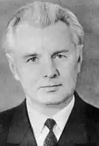

Володимир Малик
(нар. 1921 р.)
Володимир Кирилович Малик (справжнє прізвище — Сиченко) народився 21 лютого 1921 року в с. Новосілках Макарівського району на Київщині в селянській родині. Філологічну освіту здобув у Київському університеті (1950). Потім тривалий час викладав у школі українську мову й літературу. Першу його книжку — віршовану історичну казку "Журавлі-журавлики" (1957) — із задоволенням прочитали діти й дорослі. Згодом побачили світ історичні поеми й легенди молодого автора — "Чарівний перстень", "Месник із лісу", "Червона троянда", "Микита Кожум'яка", "Воєвода Дмитро". Успішно працював письменник і в галузі прози. Юних читачів полонили цікаві, гостросюжетні повісті "Чорний екватор", "Новачок", "Дві перемоги", "Слід веде до моря", "Двоє над прірвою". Письменник став широко популярним серед своїх читачів — дітей та юнацтва. Творчим досягненням Володимира Малика, безперечно, є його історичні романи "Посол Урус-шайтана" (1968), "Фірман султана" (1969), "Чорний вершник" (1976), "Шовковий шнурок" (1977), що склали тетралогію "Таємний посол", а також романи "Князь Кий" (1982) та "Черлені щити" (1985). Вони стали набутком нашої літератури, а їх автор зайняв одне з почесних місць серед кращих сучасних романістів історичного жанру. За твори історико-патріотичної тематики, зокрема романи "Посол Урус-шайтана", "Шовковий шнурок" та "Князь Кий", В. Малик удостоєний літературної премії імені Лесі Українки 1983 року. Роман "Князь Кий", написаний до 1500-річчя заснування Києва, переносить читача у сиву давнину, у вир складних історичних подій, коли після роздроблення гуннської держави Аттіли в середині V ст. її спадкоємці, ворогуючи між собою, намагалися знову підкорити східнослов'янські племена. Останній роман Володимира Малика "Черлені щити" присвячений також важливій сторінці нашої вітчизняної історії — походові новгород-сіверського князя Ігоря на половців — та славнозвісній поемі "Слово о полку Ігоревім". Поему не раз перекладали й переспівували. Відомо чимало поетичних творів, навіяних образами геніальної поеми. Однак досі не було широкого епічного полотна про русько-половецькі взаємини 1184 — 1185 pp. та про створення "Слова...". Після появи "Черлених щитів" ця прогалина в якійсь мірі заповнена. Володимир Малик відомий і як літературний критик. Його перу належить ряд рецензій на твори українських прозаїків та книжка "Олесь Донченко" (1971) — про життя й творчість відомого дитячого письменника, який тривалий час жив і працював у Лубнах на Полтавщині — місті, куди 1953 року переїхав з Київщини Володимир Малик. Лубни, засновані князем Володимиром Святославичем у 988 році водночас з іншими "городами"-фортецями Посульської оборонної лінії, мають славну тисячолітню історію, яка позначилася на творчості Володимира Малика. Там, у 1954 році, коли урочисто відзначалося 300річчя возз'єднання України з Росією, письменник задумав поему "Журавлі-журавлики", згодом у Лубнах він написав і наступні твори, а окремі моменти з історії міста знайшли безпосереднє відображення на сторінках романів "Фірман султана" та "Черлені щити". Тематика творів Володимира Малика досить різноманітна. Так, у повісті "Чорний екватор" (1960) розповідається про повстання пригнобленого народу Кенії проти англійських колонізаторів у 1952 — 1956 pp., повість "Слід веде до моря" (1975) присвячена сучасній школі, а повість "Двоє над прірвою" (1983) — героїчній боротьбі молоді в роки Великої Вітчизняної війни проти німецько-фашистських окупантів. Та все ж основною для письменника стала тема вітчизняної історії від сивої давнини до найновіших часів, їй він присвятив майже усі поетичні твори та романи. Звичайно, історичний роман вимагав значної підготовчої роботи над джерелами (документами, літописами, мемуарами сучасників, дослідженнями істориків тощо), ознайомлення з місцями, де відбувалися важливі історичні події; потрібно було продумати оригінальні сюжетні лінії, композицію, визначити героїв твору. Почалися тривалі й клопітні пошуки, роздуми. Особливо важко було знайти головного героя. Потрібен був історичний персонаж — молодий, сміливий, розумний і добре освічений козак. А серед запорожців, як зазначав І. Ю. Репін у своїх замітках, написаних під час роботи над картиною, розумних і освічених людей — тодішніх "інтелігентів" — було немало. Письменникові допоміг щасливий випадок. В одному з письмових історичних джерел ішлося про те, що напередодні російсько-турецької війни 1677 — 1681 років (походів османського війська на Чигирин) кошовий отаман Запорозької Січі Іван Сірко відрядив до Туреччини козака, який добре знав турецьку мову і звичаї населення, з таємним завданням — розвідати наміри султана Магомета IV та дізнатися про його військові приготування. Через деякий час козак повернувся на Січ і привіз важливий документ — султанський фірман (указ), в якому говорилося про намір Порти захопити й поневолити Україну та розкривалися основні воєнно-стратегічні плани Османської імперії проти Російської держави. Іван Сірко відіслав цей документ у Москву для вжиття контрзаходів. Там він і понині зберігається в архіві колишнього Посольського приказу. Історичні джерела не зберегли імені розумного й сміливого козака-розвідника. Володимир Малик назвав його Арсеном Звенигорою і вивів головним героєм тетралогії, яку розпочав у 1963 році. Вагань у виборі жанру й стилю не було: якщо писати для молоді, то в історико-пригодницькому ключі, не поступаючись історизмом, життєвою правдою. Обшир історичного матеріалу наштовхував на створення великого епічного полотна. Так у письменника з'явився й визрів задум цієї вельми цікавої й захоплюючої тетралогії, що здобула широку популярність на Україні і перекладена російською та іноземними мовами.